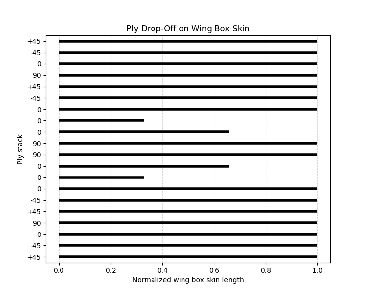
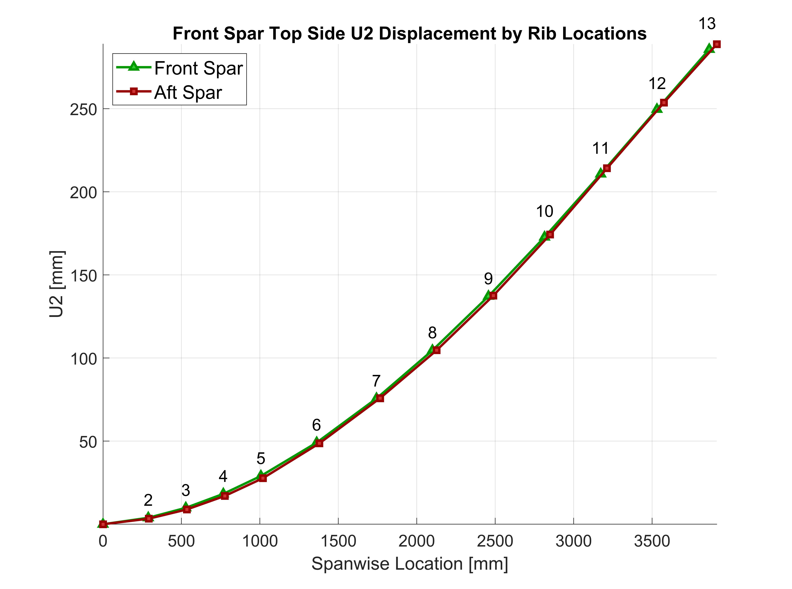
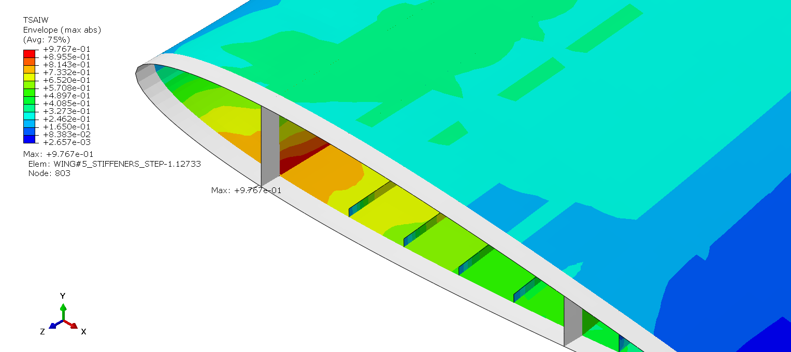
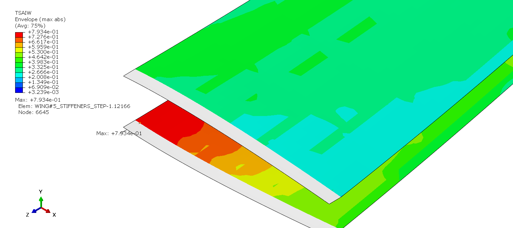
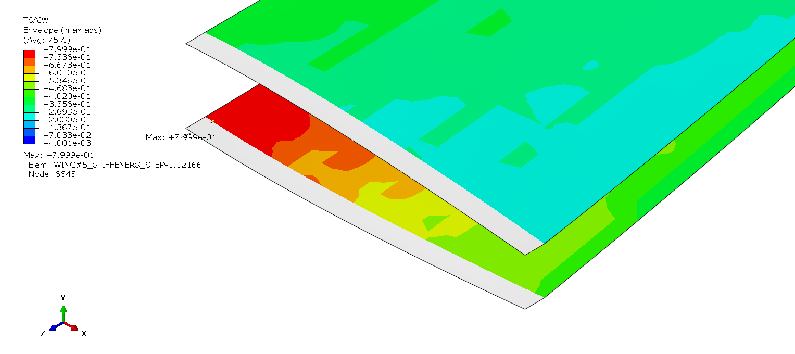

Optimization Results
After 2184 runs the algorithm wasn't converging anymore and thus the optimization was stopped. Even though algorithm sought any solution with Tsai-Wu failure index lower than 1 (while also satisfying other constraints) it was decided that only the thickness sets with Tsai-Wu values lower than 0.95 will be considered to introduce some level of safety margin into the design (Numerical model already considers the idealized material sections - ply interlaminar interface is considered perfectly bonded, etc.). Chosen solution is presented with an orange point in Tsai-Wu/Mass plot below.

Tsai-Wu/Mass optimization plot with a chosen solution shown
Results from the best solution are as follows (thicknesses per ply):
Best solution results
It is expected for the failure index to be smaller by around 5-15 % once the realistic layups are implemented in the model, which can be proven using CLT. Also, new CAE model will have a slightly bigger mass since the G1 and G2 layups will be extended by half a distance between the ribs to prevent stress peak on areas where skin and ribs meet (initial model did not have these extensions implemented).
Layup thicknesses per ply
Final Layup Configurations
Based on the presented guidelines and results obtained through the optimization process, determined layups for the wingbox section, as well as for the rest of the wing, are:
Determined layups for the whole wing
Ply Drop-Off, Wing Box Skin
Model Nomenclature
To help with model referencing simple nomenclature will be introduced:
Numerical model nomenclature
Structural Analysis Results
Observing the new results with only wingbox skin and spar caps layups being changed, it is noticed that the location of the maximum Tsai Wu failure index has been translated onto a front spar web (OPTI1). Thus, it has been decided to add 2 additional ±45° plies onto each side of the midplane of spar web layups (OPTI2). This change has reduced maximum Tsai Wu failure index from 0.977 to 0.8, and also changing the location of maximum failure index to spar cap skin interface. Maximum displacement in Y direction for the first optimized iteration (OPTI0) is 295.4 mm, and maximum displacement in Y direction for strengthened spar webs is 289.1, which represents a change of 2.2% (6.3 mm).
Below is the U2 displacement diagram in spanwise direction for top side of the both front and aft spar caps. Bottom sides' displacement wasn't plotted because of how the pressure field loading is applied since it might not show "realistic" results and the displacement might be more aggressive than it would in real world situation.
Spanwise displacement of Front and Aft Spar Cap Topside in Y direction
Important notice about the maximum failure location and value: When optimization was being run, maximum failure index was being measured for the whole wing structure - layups were simple 8 ply quasi-isotropic symmetric layups with thick plies (as described in the optimization chapter). After the results were obtained, realistic layups were implemented into the model (OPTI1), thus changing the properties of those layups including the stiffnesses. Implementation of those realistic layups resulted with different structural behavior (different material properties) under the loading conditions meaning different results were obtained - this is why maximum failure index value and location was different between the optimized model with thick plies (OPTI0) and modified one with realistic layups (OPTI1).
OPTI1 Model Results
Maximum Tsai Wu failure index of OPTI1 model

U2 displacement of OPTI1 model
OPTI2 Model Results

Maximum Tsai Wu failure index of OPTI2 model

U2 displacement of OPTI2 model
Maximum TSAIW value is in the location where spar caps edge and skin (leading edge) meet. Diagram below shows Tsai-Wu failure index values throughout the thickness of the spar cap, and also throughout the thickness of the leading edge skin.
Wingbox Analysis
If one is to observe only the layups that were being optimized, it can be noticed how the maximum failure index from the optimization process (OPTI0 model, TSAIW = 0.94767) and the one from realistic layups model (OPTI1 model, TSAIW = 0.7934). This is because using more plies within a layup whose thickness is fixed enables the layup to have more uniformed stress distribution with lower stress peaks.
Maximum Tsai Wu failure index of OPTI1 model wingbox
Maximum Tsai Wu failure index of OPTI2 model wingbox
From now on, only the OPTI2 model results will be considered, as this model represents the final model of this project regarding the strength analysis.
Failure Index Distribution Analysis
Plotting the distribution of TSAIW throughout the thickness of the layups where maximum failure index values are located (OPTI2 model), it is noticed that maximum TSAIW value for the tensile spar cap layup, C2, is on the ply oriented at 90 degrees surrounded by four 0 degree plies on each side. Reason to such high TSAIW values is the amount of stress that the neighbouring 0 degree plies take onto themselves is greater in that locality of the layup, and thus the stress transversing from the 4×0 degree plies on one side to the other is transferred through the 90 degree ply, where in contrast, stress is not distributed mainly onto the fiber but rather onto the matrix of the ply, which exhibits greatly lower strength. It is noticed that these TSAIW values drop off from the outside to the inside of the layup. This kind of distribution can be attributed to how the stress is distributed when structures like beams are subjected to loading. This distribution follows a linear rule, with stress being the greatest on the flanges or caps, and lowest in the middle of the beam or at the location of the neutral axis. This then explains why the 90 degree ply closest to the surface exhibits the greatest TSAIW values, and why each subsequent value is lower than the previous one. TSAIW values are mirrored around the midplane and this applies only to the C2 layup (basic skin layup is also plotted in the diagram with 8 plies being represented as the 8 topmost values).

TSAIW thickness-wise distribution on the front spar cap (C2)